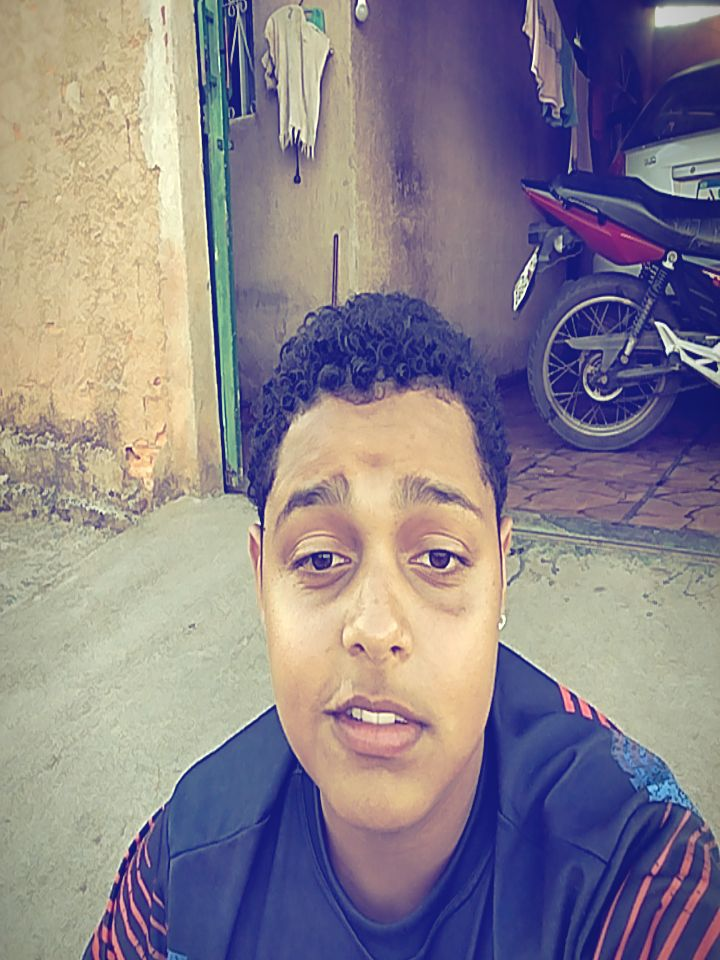

EM ANDAMENTO
Ensino Médio e curso técnico
Estudante do Ensino Médio e do curso técnico em Desenvolvimento de Sistemas, unindo os estudos escolares à prática de tecnologia.
Desenvolvimento de SistemasESTUDANTE · DESENVOLVIMENTO DE SISTEMAS
Estudante do Ensino Médio e do curso técnico em Desenvolvimento de Sistemas
Gosto de aprender na prática e criar experiências digitais. Estou construindo minha trajetória em tecnologia com projetos, estudo e participação na Liga STEAM em 2026.

const estudante = {
nome: 'João Lucas',
etapa: 'Ensino Médio',
formação: 'Desenvolvimento de Sistemas',
foco: 'aprender e criar'
};01 / SOBRE MIM
Sou estudante do Ensino Médio e também curso Desenvolvimento de Sistemas na formação técnica. Tenho interesse por tecnologia e busco transformar o que estudo em projetos práticos.
Também participo da Liga STEAM em 2026. Com orgulho, conquistei o 3º lugar no handebol do JEMG 2026, uma experiência que ficará marcada na minha trajetória escolar.
OBJETIVO PROFISSIONAL
Busco uma oportunidade para iniciar minha trajetória profissional em tecnologia, aprender com pessoas experientes e contribuir com dedicação. Tenho curiosidade, gosto de resolver problemas e estou sempre disposto a aprender algo novo.
02 / TECNOLOGIAS
Tecnologias que já aparecem nos meus projetos e que continuo praticando.
03 / FORMAÇÃO
Estudo contínuo, prática e troca de conhecimento fazem parte do caminho.
EM ANDAMENTO
Estudante do Ensino Médio e do curso técnico em Desenvolvimento de Sistemas, unindo os estudos escolares à prática de tecnologia.
Desenvolvimento de Sistemas04 / PROJETOS
Conheça meus projetos práticos, experiências e conceitos de interface.
Um jogo interativo em que a pessoa vira cartas para encontrar pares iguais. A experiência acompanha as jogadas e permite reiniciar a partida.
Uma coleção de quizzes para responder perguntas e testar conhecimentos. A demonstração apresenta perguntas, alternativas e pontuação ao final.
A Liga STEAM conecta ciência, tecnologia, engenharia, artes e matemática em uma aprendizagem integrada. Essa abordagem incentiva a curiosidade, a troca de ideias, a criatividade e a busca por soluções para desafios. Participar dessa experiência amplia meu interesse em aprender e criar.
Com orgulho, conquistei o 3º lugar no handebol dos Jogos Escolares de Minas Gerais (JEMG), em 2026. Uma conquista que ficará marcada na minha trajetória.
Conceito de organizador de tarefas para anotar atividades e acompanhar o que já foi concluído. A demonstração permite adicionar e marcar tarefas.
Proposta de interface para consulta do clima, com temperatura, condições do tempo e informações organizadas para leitura rápida.
Landing page conceitual sobre consumo local e escolhas sustentáveis, criada para apresentar uma iniciativa de forma clara e visual.
O Jogo da Memória e os quizzes são projetos feitos por mim. Liga STEAM e JEMG são experiências e conquistas. Taskflow, Clima Agora e Verde Perto são conceitos demonstrativos.
05 / CONTATO
Estou aberto a aprender, colaborar e conhecer novas oportunidades.
Curvelo, MG · joreucriaderadio@gmail.com · (38) 99733-1210